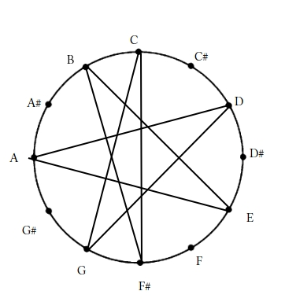

We’ll start by thinking of music a made of notes. Notes can be characterized by four properties.
Pitch - the frequency of the sound
Point in time when it begins and ends
Loudness - the energy the sound wave carries
Tone color/timbre - distribution of energy at various frequencies as well as how the energy accumulates/dissipates.
We’re focus on measuring/quantifying pitch and time of a note much more than we do for the loudness and timbre. To measure pitch/time we usually put them in a reference system (I guess the same thing as a reference frame in physics).
A pitch is how high or low a note is. We identify pitches by relating them to a specific collection and compare pitches by relating both pitches to a specific collection. I guess an example of this would be how the 440Hz is \(A_4\) on the piano.
Lets examine one collection that everyone knows about, the Chromatic Collection which is measured by semitones. Lets first play one note on the piano, and if we go exactly one key higher (e.g. from a C to a C#) then the difference between the pitches of those two notes (should) be the exact same difference between the pitches of the note one key higher and two keys higher (e.g. from C# to D). The difference in these pitches are called semitones. A collection of pitches that are separated by semitones is called a chromatic collection. Using this notion of semitones we can also start comparing pitches by describing their difference in semitones. For example, C and D differ by 2 semitones.
Lets move onto another collection hm? An interval of twelve semitones is very special. For example, if we play the highest note on the piano and then a note 12 semitones lower, what do we get? The same note but an octave down. Despite the fact that they’re obviously not the same pitch, we can accept they’re the same note. A collection or set of notes that are separated by 12 semitones is called a Pitch Class.
Now just one more collection. Consider the intervals between notes if we only use the white keys starting at a C. We’ll notice that there’s a repeating pattern every 7 notes. We’ll denote semitone as ST and two semitones as a whole tone of WT. The pattern goes
\[WT\text{ }WT \text{ }ST \text{ }WT \text{ }WT \text{ }ST\]
We can do this pattern starting on other notes too(this is obviously a scale but pretend you don’t know that.) A set of pitches separated by this pattern is called a Diatonic Collection. Since there are twelve pitches to start on in the chromatic collection, there are twelve diatonic collections if we work from the frame of reference of the chromatic collection.
To notate pitch we use a five line staff were we can put a note on a line of between two lines. Notes of the same pitch fall on the same line/space and notes adjacent in the diatonic collection are on the adjacent lines and spaces. We use a clef to denote which line/space corresponds to which pitch and we use a key signature to denote what diatonic collection we are using. We can use accidentals to denote notes that are not in a diatonic collection. By putting a sharp(\(\sharp\)) we can demonstrate that we want to play a note a semitone higher and putting a flat(\(\flat\)) we can demonstrate that we want to play a note a semitone lower. There are also double-sharps, double-flats, and naturals.
We can name intervals by pitches relations to eachother in a collection. For example two pitches that are the same have the same name in a collection and can be called a unison. Two adjacent pitches can be called a second. We should notice that there are two kinds of "second" intervals in the diatonic set however. One is a interval composed of two semitones(e.g. C to D in the C-Diatonic collection) and another is a interval composed of one semitone (e.g. E to F in the C-diatonic collection). We’ll call the former a major second and the latter a minor second.
We can think of bigger intervals by how they can be made up of major or minor seconds. A interval that is made up of two second intervals can be called a third. And since there are two kinds of second intervals there must be at least two third intervals. In the diatonic collection we have intervals made up of two major second intervals (e.g. F to G to A) and intervals made up of a major second and a minor second interval (e.g. D to E to F). We’ll call the former a major third and the second a minor third. There is another third that can be made up of two minor seconds (e.g. G# to A to Bb) that doesn’t appear in the diatonic collection that we’ll call a diminished third.
Fourths are very similar. They are intervals made up of three second intervals and in the diatonic collection there are two possibilities. An fourth interval with a difference of five semitones (via some combination of two major seconds and one minor second) and a fourth interval with a difference of six semitones (via three major seconds). The former we can call a perfect fourth. The latter is called an augmented fourth and only occurs once in a diatonic collection. A possible combination that doesn’t appear in the diatonic set is a fourth made up of two minor seconds and one major second. This we’ll call a diminished fourth.
Lets speed run the remaining three since this is getting tedious. \[mS=\text{minor second}\] \[MS=\text{major second}\] Fifths can be either perfect(ms+3MS), diminished(2ms+2MS), or augmented(4MS).
Sixths can be major(ms+4MS), minor(2ms+3MS), or augmented (5MS).
Sevenths can be major(ms+5MS), minor(2ms+4MS), or diminished (3ms+3MS).
Eights are called octaves and if they are in the diatonic collection, then there is only one. An interval made up of 12 semitones or (2ms+5MS). We’ll call this a perfect octave. There are of course also augmented octaves(ms+6MS) and diminished octaves(3ms+4MS).
Octaves larger than an either can be called compound octaves and can be thought of in terms of \(n\cdot octave\) and some interval smaller than an either. For example, we can think of a major \(10^{th}\) to be just an octave and a major third.
Generate a diatonic collection starting at 6 o’clock

We have generated the G-scale
For each of the following give (a) the size of the interval in semitones and (b) the name of the interval in terms of he diatonic collection. They’re shown as notes on a stave in the book but I’ll just write the note names here for simplicity.
B to C in key of C - one semitone, minor second
D to E in key of C - two semitones, major second
B to C# in the key of E - two semitones, major second
D# to E in the key of E - one semitone, minor second
F to A in key of Bb - four semitones, major third
A to C in key of Bb - three semitones, minor third
F# to A in key of D - three semitones, minor third
A to C# in key of D - four semitones, major third
F# to B in key of D - five semitones, perfect fifth
A to F in key of C - eight semitones, augmented fifth
F to B in key of C - six semitones, augmented fourth
A# to D in key of D - four semitones, major third
B to F in key of C - six semitones, augmented fourth
D to A in key of C - seven semitones, perfect fifth
Bb to F# in key of Bb - eight semitones, augmented fifth
Db to Ab in key of Ab - seven semitones, perfect fifth
B to G in key of C - eight semitones, augmented fifth
D to B in key of C - nine semitones, major sixth
Bb to G in key of Ab - nine semitones, major sixth
Db to B natural in key of Ab - ten semitones, augmented sixth
F to E in key of C - eleven semitones, major seventh
A to G in key of C - ten semitones, augmented sixth
F# to Eb in key of Eb - nine semitones, major sixth
Ab to G in key of Eb - eleven semitones, major seventh
07-11-2019: started chapter two
07-12-2019: finished section on pitch
Think you found a mistake? You probably did. Let me know at hi@delonshen.com if you want.